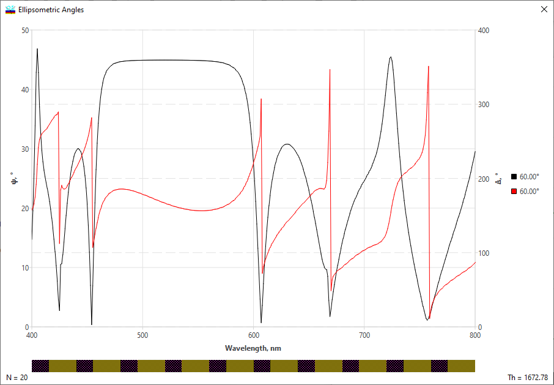

Ellipsometric Angles
Ellipsometric Angles
Navigation: OptiLayer Menu Commands > Analysis Menu >
Ellipsometric Angles
` <idh_gd_gdd.html>`__ ` <idh_menu_analysis.html>`__ ` <layer_absorptance.html>`__
To evaluate Ellipsometric Angles, you can use the Analysis tools available from the Evaluation menu in the Analysis menu. Start by clicking on the Ellipsometric Angles command from the Evaluation menu. This command will display the ellipsometric angles for the design that is currently loaded in memory. The ellipsometric angles provide valuable information about the optical properties of the material and can help in characterizing and analyzing thin film structures.

To access the popup menu, right-click with your mouse. This menu allows you to modify graphic settings, switch between the Spectral and Angular modes, and access other frequently required options. In the Angular Mode, ellipsometric angles are plotted as functions of the incidence angle for specific wavelength values.